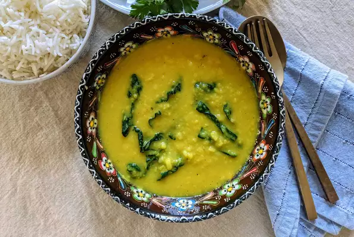

Moong Daal

Description
Indian kale and moong dal for veggie lovers.
Ingredients
- ½ cup dried moong dal
- 1 tablespoon olive oil
- ½ tablespoon ground turmeric
- ¼ tablespoon cumin seeds
- 3 cups chopped kale
- 1 pinch chili powder (Optional)
- salt to taste
- ¼ cup water
Steps
- Soak moong dal in water for 30 minutes. Drain.
- Heat oil in a large pan over medium-low heat. Add turmeric and cumin seeds; cook until seeds start crackling. Add kale and soaked dal, followed by chili powder and salt. Pour in 1/4 cup water; bring to a boil. Reduce heat back to medium-low and cover the pan. Cook, mixing every 5 minutes, until desired tenderness is reached, 10 to 20 minutes total.